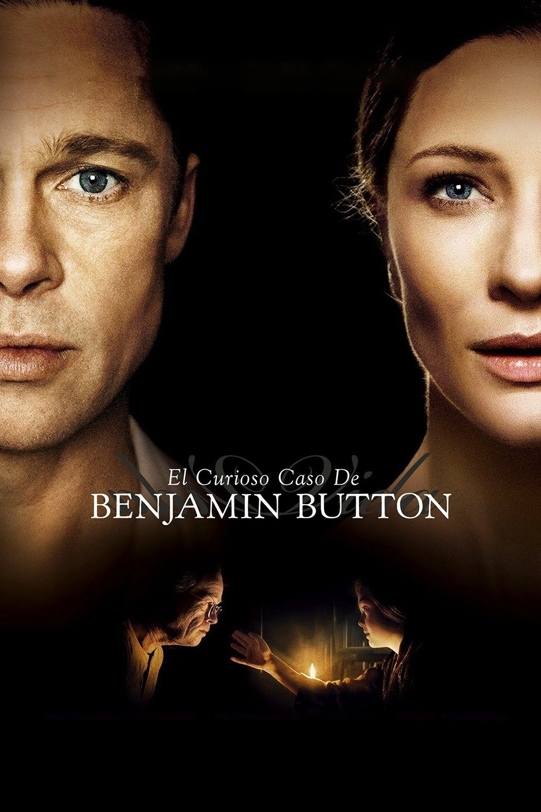
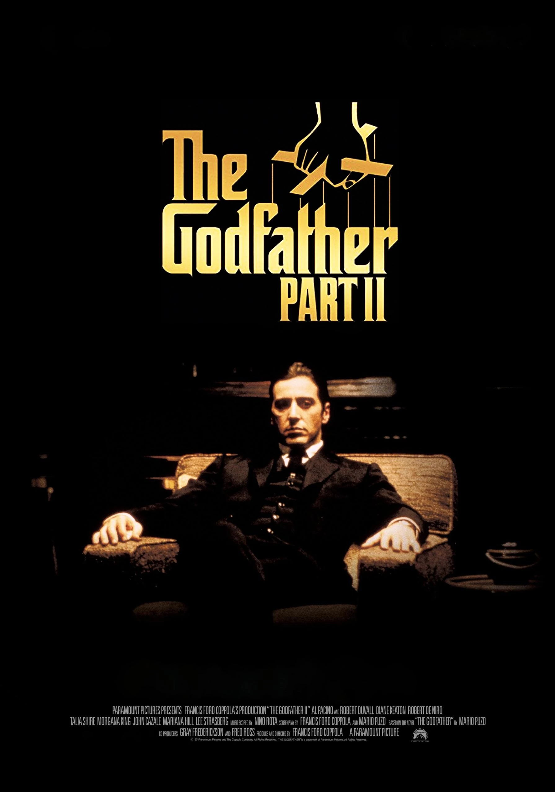
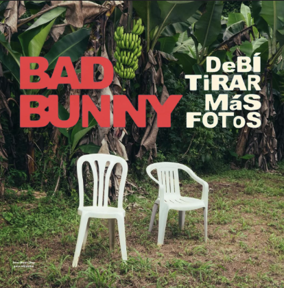

Marcos Aquino
Ciudad: Buenos Aires, Argentina
Edad: 28 Años
Sobre mí
Siempre me llamaron la atención las historias que hablan sobre el tiempo, las decisiones y cómo nuestras elecciones van cambiando el rumbo de nuestras vidas. Por eso me gustan especialmente las películas y canciones que tratan esos temas.
Actualmente estoy aprendiendo programación porque también me interesa la tecnología y cómo puede cambiar la forma en que vivimos y el curso de nuestras propias vidas.
Habilidades
- HTML5
- CSS
- JavaScript
- Python
- C#
- Figma
- Git / GitHub
- Cargando nuevas habilidades...
Películas favoritas
Hacé clic sobre una película para una descripcion personalizada.

El curioso caso de Benjamin Button
David Fincher
Tiempo
El paso del tiempo y las decisiones llevan a Benjamin a una vida nómade, llena de experiencias que van formando su historia.
Cuestión de tiempo
Richard Curtis
Decisiones
Tim puede volver al pasado y corregir decisiones, pero aprende que incluso las pequeñas elecciones cotidianas construyen su vida.

El Padrino II
Francis Ford Coppola
Destino
Muestra cómo las decisiones de Vito y Michael, a lo largo del tiempo, van formando el destino de la familia y su poder.
Álbumes favoritos
Hacé clic sobre un álbum para ver mi canción favorita.
Luzbelito
Patricio Rey y sus Redonditos de Ricota
-Me matan limón-
Relata las ultimas horas con vida de un personaje que me llama la atencion

DeBÍ TiRAR MáS FOToS
Bad Bunny
-Baile Inolvidable-
Relata el recuerdo de una persona en su juventud en las noches de puerto rico a travez de la musica y el baile. Soy yo viviendo esa juventud de salsa y amigos

La vida era más corta
Milo J
-Niño-
sobre heridas en la infancia, el abandono y la vulnerabilidad. Me gusta por su mensaje de consuelo, esperanza y conexión con el niño interior
Pruebas de QA
Comprobación de las funcionalidades del perfil.